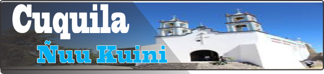
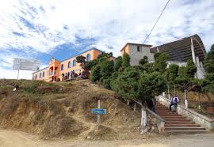
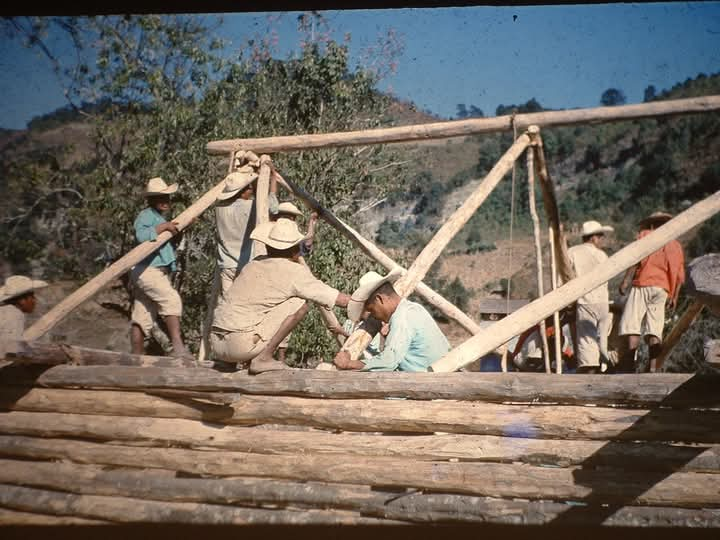
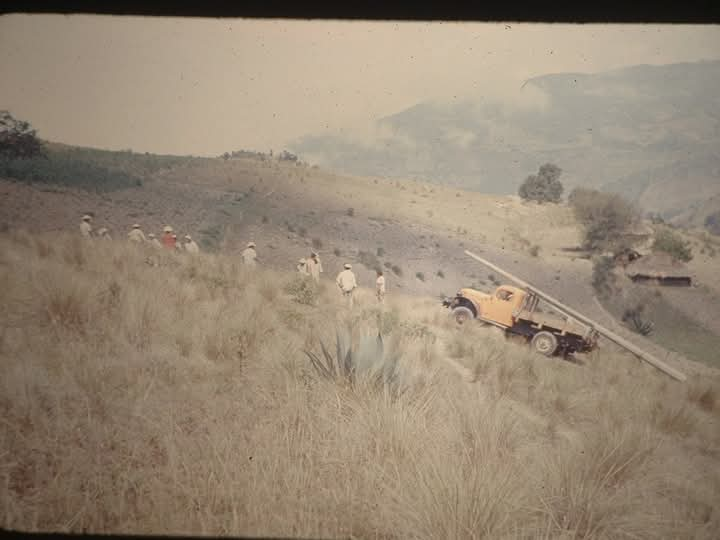
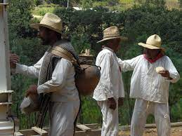
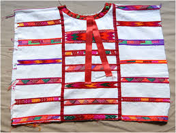

 |
|
| principal |       |
El pueblo de Santa Maria Cuquila es una localidad situada en el municipio de Tlaxiaco, en el estado de Oaxaca, México. Santa Maria Cuquila Población Prehispánica: Antes de la llegada de los españoles, la región estaba habitada por pueblos mixtecos. Estos grupos tenían una organización social compleja, con estructuras políticas y económicas que les permitieron desarrollar su cultura y tradiciones. Fundación Colonial: Con la llegada de los conquistadores españoles en el siglo XVI, se establecieron nuevas poblaciones y se fundaron iglesias. Santa María Cuquila fue oficialmente fundada en este periodo, aunque las comunidades indígenas ya existían previamente. La evangelización fue un proceso clave, ya que los españoles construyeron una iglesia dedicada a Santa María, lo que también dio nombre a la localidad. Desarrollo en el Siglo XIX: Durante el periodo de independencia (1810-1821), las comunidades indígenas comenzaron a luchar por su autonomía y derechos. Santa María Cuquila no fue la excepción; sus habitantes participaron en movimientos que buscaban mejoras sociales y económicas. Impacto de la Revolución Mexicana: En el siglo XX, la Revolución Mexicana (1910-1920) trajo consigo cambios importantes en la estructura agraria del país. Las tierras que antes eran controladas por grandes hacendados empezaron a ser redistribuidas, lo que afectó directamente a las comunidades indígenas. Cultura y Tradiciones: A lo largo de los años, Santa María Cuquila ha mantenido vivas muchas de sus tradiciones, que son una mezcla de su herencia indígena y las influencias coloniales. Las festividades locales, como las celebraciones religiosas y las ferias, son reflejo de esta rica historia cultural. Situación Actual: Hoy en día, Santa María Cuquila sigue siendo un lugar donde se preservan las tradiciones mixtecas, y la comunidad trabaja para mejorar su calidad de vida mientras mantiene su identidad cultural. |